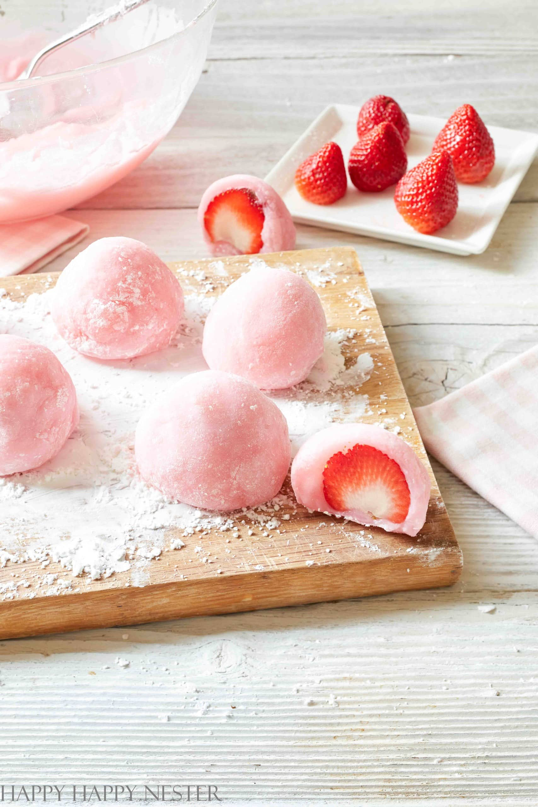

Mochi Recipe

Description:
Mochi is a Japanese dessert that is made from pounded rice. Mochi is pounded sticky rice, usually in a round ball. Daifuku is another Japanese dessert that has mochi as an outer layer and is stuffed with a sweet red bean paste. We will use rice flour, add water, sugar, and strawberries for this recipe, and form it into a ball-shaped dessert. The center will be filled with a whole fresh strawberry.
Ingredients:
- Mochiko sweet rice flour
- Water
- Red dye
- Sugar
- Cornstarch
- Strawbberry
Steps:
- Prepare counter:Clean your counter and sprinkle it with Mochiko flour or cornstarch. It is advised to place parchment paper down and cover it with cornstarch. Sprinkle a container or plate with Mochiko flour or cornstarch.
- Prepare strawberries:Wash strawberries and pat dry. Make sure they are thoroughly dry before using them for mochi.
- Measure and mix flour and sugarMeasure out the Mochiko flour and sugar and mix in a medium size bowl.
- Mix in more ingredients:Add the water, vinegar, and food coloring to the rice flour. The drop of vinegar helps keep the mochi pliable.
- Microwave the mochi:Cover the bowl with plastic wrap or a microwaveable plate. Place the mochi mixture in the microwave and cook on a high setting for a minute. Not all microwaves have the same strength, so your cook time might be less or more. Please adjust accordingly. Take out of the oven and stir. Cover again with plastic and cook another minute. Repeat this until you cook it for about 4 minutes. You’ll notice that the mochi will start to bake on the sides of the bowl. As you continue, the whole mixture will bake. If, after 4 minutes, everything is cooked except the middle, that’s ok. It’s done.
- Shape the mochi:Form dough into a small pancake about 3 ½ – 4 inches wide in diameter. Place one strawberry in the middle of your round pancake and place the strawberry upside down. Next, bring up the sides of the mochi and pinch them in the middle. Make sure that all edges get pinched together, so there are no holes. Roll mochi in a ball in your hand. Place seams side down on a plate sprinkled with Mochiko flour or cornstarch.